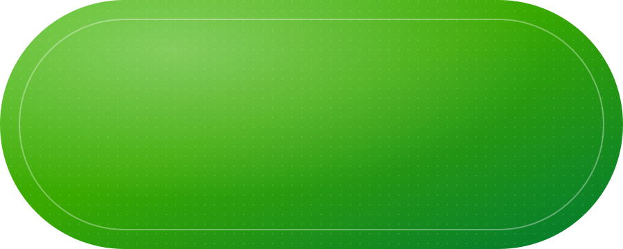
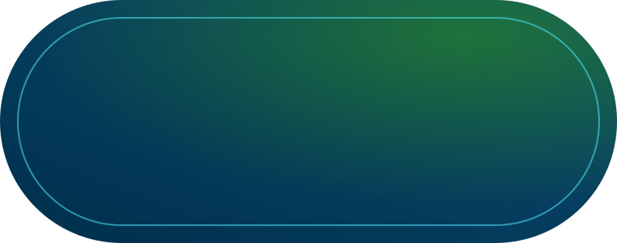
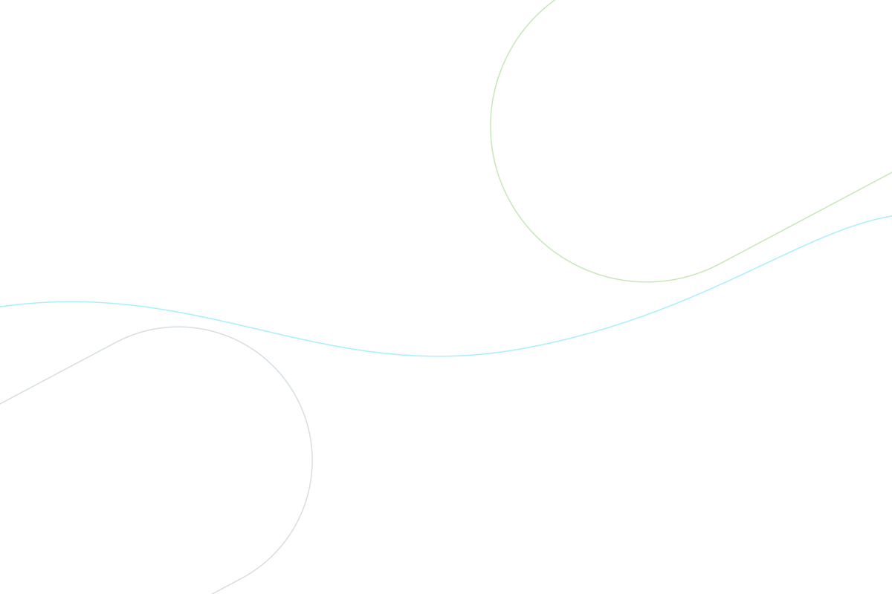

Tokens, componentes con estados, movimiento, medidas y accesibilidad para el login y el dashboard administrativo.
El prototipo original (fondo azul-verde oscuro, tarjeta de vidrio) se ve bien aislado, pero al entrar al dashboard blanco produce un "salto" de luminosidad y contradice el lineamiento de fondo predominantemente blanco. La propuesta conserva su ADN y lo traslada a blanco:
#007832 (5.6:1) en vez de blanco sobre oscuro.#FAF9F7): sin destellos.Fuente: tokens.css (variables CSS) y tokens.json (formato W3C Design Tokens, importable en Figma con Tokens Studio). Primitivos → semánticos; los componentes solo usan semánticos. El contraste de cada muestra se calcula en vivo contra blanco.
Work Sans (tipografía institucional del Manual SENA) para títulos y cifras; Figtree para la interfaz: sans humanista, alta legibilidad a 12–15 px y números tabulares. Mínimo absoluto 12 px.
| Estilo | Muestra | Familia · peso | Tamaño / interlínea |
|---|---|---|---|
| H1 | Resumen de hoy | Work Sans 700 | 32 / 40 |
| H2 | Ocupación de ambientes | Work Sans 700 | 24 / 32 (18 / 26 en tarjetas) |
| H3 | Agenda de hoy | Work Sans 600 | 18 / 26 |
| KPI | 87% | Work Sans 700, tabular | 36 / 40 |
| Cuerpo | Revisión de inventario del ambiente 204. | Figtree 400–500 | 15 / 24 |
| Pequeño | Actualizado hace 1 min | Figtree 400–600 | 13 / 20 |
| Etiqueta | Ingreso a la plataforma | Figtree 700, +12 % tracking | 12 / 16 |
Estados forzados con clases .is-hover, .is-focus, .is-active, .is-disabled solo para esta guía; en producción responden a :hover, :focus-visible, :active, :disabled. Pasa el cursor por la columna "Default" para verlos en vivo.
Hover: −3 px en Y, sh-1 → sh-3, borde verde 200 · 200 ms ease-standard.
Barras: verde < 90 %, oro 90–99 %, rojo 100 %. El color nunca es el único indicador: siempre va con la cifra.
Microinteracciones 120–200 ms; transiciones de pantalla 400–800 ms. Todas las curvas son cubic-bezier. Con prefers-reduced-motion las duraciones van a 0 y solo queda un fundido de 200 ms.


t=0 es el éxito de la API. Antes: spinner en el botón. Toast de bienvenida a los ≈1,3 s, auto-dismiss 5 s (configurable, se pausa con hover).
| Interacción | Propiedad | Duración | Curva | Token |
|---|---|---|---|---|
| Hover botón / nav | background, translateY(−1px) | 120 ms | standard | --dur-micro-1 |
| Foco de input | border-color, anillo 0→4 px, etiqueta sube y escala .8 | 160 ms | standard | --dur-micro-2 |
| Hover tarjeta | translateY(−3px), sombra sh-1→sh-3 | 200 ms | standard | --dur-micro-3 |
| Ripple de botón | scale 0→1, opacidad .22→0 | 520 ms | out-cubic | — |
| Selector de rol | translateX del indicador | 280 ms | bounce | — |
| Error de login | sacudida X: −8, 7, −5, 3, 0 px | 380 ms | standard | — |
| Micro-bounce al validar | scale 1 → 1.03 → .99 → 1 | 360 ms | bounce | — |
| Salida de piezas | translate A (70vw, −80vh), B (−70vw, 80vh) | 750 ms | in-out-cubic | --dur-screen-3 |
| Crossfade | opacity | 400 ms | standard | --dur-screen-1 |
| Slide-up contenido | translateY 24→0 | 600 ms | out-cubic | --dur-screen-2 |
| Sidebar | translateX −16→0 + opacity | 600 ms, delay 120 ms | out-cubic | --delay-sidebar |
| Contadores | 0 → valor, formato es-CO | 1000 ms | out-cubic | — |
| Barras de ocupación | scaleX 0→1, escalonado 80 ms | 900 ms | out-cubic | — |
| Toast entra / sale | translateY(−120 %)→0 / −60 % + scale .96 | 420 / 240 ms | bounce / in-out | — |
| Elemento | Medidas |
|---|---|
| Tarjeta de login | Ancho 440 máx. · padding 32/32/24 (móvil 24/20/20) · radio 28 · fondo blanco 88 % + blur 18 px · sombra sh-4 · filo verde superior 3 px |
| Pieza A (verde) | 900×360, radio 180, rotación −28° · ancho min(64vw, 900px) · ancla arriba-derecha |
| Pieza B (azul) | 760×300, radio 150, rotación −28° · ancho min(52vw, 760px) · ancla abajo-izquierda |
| Input / botón principal | Alto 52 · radio píldora · borde 1.5 · padding horizontal 20 · etiqueta 15 → 12 px al flotar |
| Campo documento | Prefijo de tipo 80 px con divisor 1.5 px · texto desde x=96 |
| Selector de rol | Contenedor padding 4 · opciones alto 44 · 3 columnas iguales |
| Sidebar | Ancho 256 · padding 24/12 · ítems alto 44, radio 12, gap ícono 12 · indicador activo 4×(alto−20) |
| Topbar | Padding 20/32 · búsqueda alto 44, máx. 300 · fondo #FAF9F7 82 % + blur 12 |
| Contenido | Padding lateral 32 (móvil 16) · gap entre bloques 24 · gap en rejillas 16 |
| Tarjeta KPI | Padding 20 · ícono 40×40 radio 12 · cifra 36/40 |
| Tarjeta de ambiente | Mín. 230 de ancho · foto 112 de alto · cuerpo padding 16 · barra 8 px |
| Breakpoints | 1180 (KPIs 2 col, rejilla 1 col) · 900 (sidebar off-canvas 280) · 640 (login móvil) · 480 (KPIs 1 col) |
Objetivo WCAG 2.2 AA. El verde institucional #39A900 sobre blanco da 3.07:1: sirve para elementos gráficos y texto ≥ 24 px, no para texto normal ni para el fondo de botones con texto blanco; ahí se usa #007832.
| Componente | Primer plano / fondo | Ratio | Requisito | Resultado |
|---|
--sm (40 px) y filtros (36 px) amplían su zona con ::after hasta 44.aria-label obligatorio.aria-invalid + aria-describedby; banner con role="alert".aria-live="polite" y se pausan con hover.prefers-reduced-motion (ya en tokens).Todo en SVG (fuente vectorial) dentro de diseno/assets/. Para PNG: exportar @1x y @2x desde el SVG (Figma o npx svgexport). El logo SENA se usa tal cual desde img/: sin sombras, degradados ni cambios de color.

assets/fotos/, 16:7, ≥ 960 px. Se asignan con style="--foto:url(...)" en .amb__foto.{kind=link}
{kind=link}
{kind=link}
{kind=link}
{kind=link}